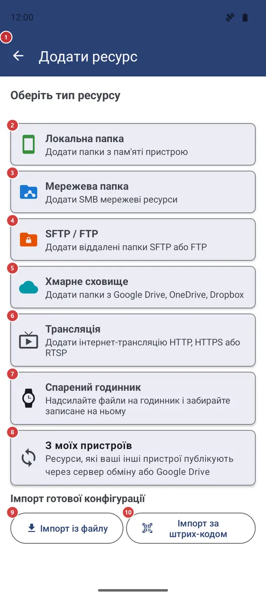
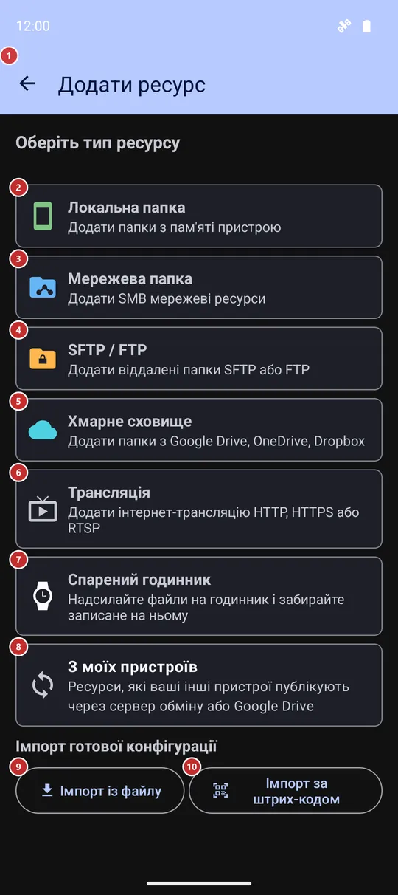

Додати ресурс
Для чого цей екран
«Додати ресурс» - екран, де ви підключаєте до застосунку нове місце з файлами: папку на пристрої, мережеву папку, сервер SFTP чи FTP, хмарну папку, інтернет-трансляцію або годинник. Оберіть тип, заповніть коротку форму - і новий ресурс з’явиться в списку у списку ресурсів.


Порядок дій
- Оберіть, що додати: «Локальна папка» 2 - папка на пристрої, «Мережева папка» 3 - ресурс SMB, далі «SFTP / FTP» 4, «Хмарне сховище» 5, «Трансляція» 6, «Спарений годинник» 7 або «З моїх пристроїв» 8. Типи, вимкнені в налаштуваннях або відсутні у вашій редакції, не показуються, а якщо натиснути «Додати» у списку ресурсів при відкритій вкладці типу, одразу відкриється форма цього типу.
- Папка на пристрої: натисніть «СКАНУВАТИ» 12, щоб отримати підказки, або «Додати вручну» 13, щоб обрати папку самому; позначте потрібне в списку 14 і натисніть «Додати до ресурсів» 11.
- Мережева папка: введіть адресу сервера 17 або знайдіть її через «Сканувати мережу» 16. Вкажіть ім’я користувача 18 і пароль 19, перевірте їх кнопкою «Тест з'єднання» 20, оберіть папку через «Сканувати хост» 21 або впишіть її ім’я 22 і натисніть «Додати цей ресурс» 27.
- SFTP або FTP: оберіть протокол 29, введіть хост 30 і дані для входу 31, перевірте кнопкою «Перевірити з'єднання» 32, вкажіть шлях на сервері 34 і натисніть «Додати ресурс» 36.
- Хмарне сховище: натисніть на сервіс 15, увійдіть в акаунт, потім заходьте в папки кнопкою «Всередину» 45 і натисніть «Вибір» 46 біля потрібної папки.
- Маєте готову конфігурацію від companion-застосунку для Windows? «Імпорт із файлу» 9 або «Імпорт за штрих-кодом» 10 позбавлять від введення всіх даних уручну.
- «Назад» 1 закриває екран, нічого не додаючи з того, що ще не збережено.
Елементи
Що додати
1НазадЗакриває екран, не додаючи те, що ви ще не зберегли.
І зі списку типів, і з будь-якої форми кнопка повертає на екран, з якого ви прийшли, - зазвичай на головний. З форми до списку типів вона не повертає: щоб обрати інший тип, відкрийте «Додати» знову. Введене у формі, але не додане, пропаде.
- Сполучення клавіш
- Esc / F10
2Локальна папкаДодає папку або добірку медіа з цього пристрою.
Відкриває форму локальної папки: застосунок може сам знайти папки з медіа, або ви обираєте будь-яку папку самі, зокрема на карті пам’яті чи USB-накопичувачі. Ця картка є завжди. Якщо всі віддалені джерела вимкнено або їх немає у вашій редакції, вибирати більше нема з чого, тож екран пропускає список типів і одразу відкриває цю форму.
3Мережева папкаДодає спільну папку з комп’ютера чи NAS за протоколом SMB.
Відкриває форму SMB: адреса сервера, вхід і назва спільної папки. Картка з’являється, лише якщо SMB є у вашій редакції та ввімкнений у налаштуваннях, на вкладці «Загальні», у розділі «Віддалені ресурси (SMB/(S)FTP/Хмара)».
4SFTP / FTPДодає папку на сервері SFTP або FTP.
Відкриває форму SFTP / FTP: там обирають протокол і входять за паролем або SSH-ключем. Картка видима, якщо SFTP чи FTP є у вашій редакції та ввімкнені в налаштуваннях, на вкладці «Загальні», у розділі «Віддалені ресурси». Дві кнопки імпорту повторюються у верхній частині цієї форми.
5Хмарне сховищеДодає папку з Google Диска, OneDrive або Dropbox.
Відкриває список хмарних сервісів. Хмара є не в усіх редакціях, а картка видима, лише поки в налаштуваннях, на вкладці «Загальні», у розділі «Віддалені ресурси», ввімкнено хоча б один хмарний сервіс.
6ТрансляціяДодає інтернет-трансляцію за її адресою.
Замість форми на цьому екрані відкривається редактор ресурсу для нової трансляції. Там ви задаєте назву й адресу (http, https або rtsp), а за бажання - коментар чи ПІН-код. Після збереження трансляція з’являється серед ресурсів, як і будь-який інший.
7Спарений годинникДодає ваш спарений годинник як ресурс.
Годинник не має ні адреси, ні пароля, тож застосунок питає лише назву (пропонується «Годинник»). Спареного годинника один, і якщо він уже є серед ресурсів, ви побачите повідомлення замість дубліката. Картка є лише в редакціях, які вміють працювати з годинником.
8З моїх пристроївПідключає ресурси, які публікують ваші інші пристрої.
Відкриває список ресурсів, якими ваші інші пристрої діляться через сервер обміну або Google Диск. Позначте потрібні й натисніть «Підключити» або «Підключити всі», щоб узяти весь список. Картка показується разом із карткою SFTP / FTP: підключені ресурси працюють як SFTP.
9Імпорт із файлуСтворює ресурси з файлу конфігурації, підготовленого на комп’ютері.
Виберіть файл конфігурації, який зберіг companion-застосунок для Windows. Застосунок прочитає його, додасть нові ресурси, оновить наявні, повідомить, скільки змінилося, і закриє цей екран. Якщо у файлі немає пароля, спершу з’явиться вікно з назвою сервера й запитом пароля. Пошкоджений файл або файл від новішої версії відхиляється з повідомленням.
10Імпорт за штрих-кодомСтворює ресурси за QR-кодом, який показує програма на комп’ютері.
Відкриває камеру для сканування коду й далі імпортує все так, як із файлу. Код сполучення з вбудованого SFTP-сервера іншого телефона теж підійде: він заповнить форму SFTP / FTP, а вам залишиться перевірити дані й зберегти. На пристроях без камери, зокрема VR-гарнітурах, кнопки немає - скористайтеся кнопкою «Імпорт із файлу».
11Додати до ресурсівЗберігає папки, позначені в локальному списку.
Кнопка з’являється, лише коли у формі локальної папки є що додавати. Вона додає кожен позначений рядок як ресурс, повідомляє, скільки додано, і закриває екран. Якщо нічого не позначено, ви отримаєте нагадування вибрати хоча б один ресурс. Якщо список швидкого сортування заповнений, ресурси все одно додадуться, але зайві будуть без позначки швидкого сортування, а в повідомленні буде вказано, скільки їх.
Локальна папка і хмара
12СКАНУВАТИШукає на пристрої папки з медіа.
Складає список підказок: стандартні папки, папки з медіафайлами та добірки на кшталт «Нещодавні медіа» або «Вся музика». Уже додані папки й добірки до списку не потрапляють. Поки що нічого не зберігається - позначте потрібне в списку нижче й натисніть «Додати до ресурсів».
13Додати вручнуОбирає папку або добірку вручну.
Відкриває вікно «Вибрати папку». Кнопки розділу «Віртуальні ресурси» («Нещодавні медіа», «Вся музика», «Усі відео», «Фото з камери», «Усі зображення», «Усі документи») одразу додають добірку й закривають цей екран. «Швидкий вибір стандартних папок» пропонує корінь пам’яті, DCIM, Pictures, Download, «Документи» та папки WhatsApp, Telegram і Instagram; «Знімні носії» показують підключені картки й накопичувачі; решту покривають поле для шляху (лише там, де застосунку дозволено читати шляхи) та системний вибір папки. Обрана папка потрапляє до списку нижче вже з галочкою.
Якщо Android спершу вимагає «Доступ до всіх файлів», вікно пояснить це й запропонує надати доступ або продовжити з обмеженнями.
14Ресурси для додавання:Знайдені або обрані папки - позначте потрібні й додайте.
У кожному рядку є прапорець, назва, яку можна змінити, шлях, кількість файлів і по одній літері на кожен тип медіа - натисніть на літеру, щоб увімкнути чи вимкнути цей тип. Нижче - «Швидке сортування», «Лише читання», «З підпапками» та «Усі файли». Папку, до якої не можна записувати, не можна позначити для швидкого сортування. Поки не надійшла перша папка, список схований.
15Виберіть хмарний сервісВходить у Google Диск, OneDrive або Dropbox і дає обрати папку.
На кожній картці написано «Не підключено» або «Підключено як» і акаунт. Натисніть на сервіс: якщо ви вже входили, оберіть акаунт або «Додати новий акаунт», інакше вхід почнеться одразу. Після успішного входу відкриється вибір папки (див. останню групу на цій сторінці).
Форма мережевої папки (SMB)
16Сканувати мережуЗнаходить у локальній мережі комп’ютери зі спільними папками.
Відкриває вікно «Виявлення мережі» і сканує вашу локальну мережу. Оберіть комп’ютер у списку: його адреса потрапить у поле «IP сервера», а застосунок покаже його спільні папки. На деяких версіях Android спершу запитується дозвіл на доступ до пристроїв у локальній мережі.
17IP сервераАдреса комп’ютера чи NAS, що роздає папку.
Введіть IP-адресу. Поле починається з перших трьох чисел адреси самого телефона, тож зазвичай лишається дописати останнє. Порожня або хибна адреса зупиняє «Тест з'єднання» та «Сканувати хост» із повідомленням.
18Ім'я користувачаОбліковий запис, якому дозволено відкривати папку.
Введіть ім’я облікового запису на сервері. Домен Windows, якщо він використовується, вказується в розділі «Додаткові параметри».
19ПарольПароль цього облікового запису.
Він зберігається разом із ресурсом, щоб застосунок потім підключався сам. Поки ця форма відкрита, екран може ховатися від знімків екрана й списку нещодавніх застосунків - це залежить від налаштування «Захищати секретні екрани».
20Тест з'єднанняПеревіряє адресу й вхід, перш ніж ви збережете ресурс.
Підключається з тим, що ви ввели, і показує у вікні «Тест з'єднання - Успішно» або «Тест з'єднання - Помилка». Нічого не зберігається.
23Назва ресурсуЯк ресурс називається у вашому списку.
Якщо залишити поле порожнім, застосунок візьме назву спільної папки. Пізніше ресурс можна перейменувати в його редакторі.
24Умови сканування вмістуВизначає, які файли спільної папки враховує застосунок.
Розділ, що згортається, з п’ятьма параметрами. «З підпапками» шукає медіа в усіх вкладених папках. «Усі файли» показує файли будь-яких типів, а не лише медіа. «Показувати підпапки окремо» виводить підпапки як елементи, у які заходять натисканням. «Вимкнути мініатюри» показує значки розширень замість превʼю. «Запамʼятовувати список файлів для цього ресурсу» зберігає копію списку на пристрої, щоб він відкривався швидше.
25Типи медіаОбирає, які види файлів показує ресурс.
Позначте «Зображення», «Відео», «Аудіо», GIFs, «Текст», PDF, EPUB і DOC - у списку є лише типи, ввімкнені в налаштуваннях і доступні у вашій редакції. Кнопка згори, спочатку «Довільний», відкриває «Профіль ресурсу» з готовими наборами: «Аудіотека», «Відеотека», «Фотосховище», «Документи» та «Файловий менеджер». «Усі файли» в розділі вище позначає всі типи й блокує прапорці.
26Додаткові параметриНеобов’язкове: швидке сортування, лише читання, коментар, ПІН-код, домен і порт.
«Швидке сортування» робить папку місцем призначення для сортування. «Лише читання» забороняє в ній копіювання, переміщення й видалення та вимикає швидке сортування. «Коментар» - нотатка для себе, а «ПІН-код (необов'язково)» захищає ресурс 4-6 цифрами. «Домен (необов'язково)» потрібен для доменних облікових записів Windows, а «Порт» - 445, якщо ваш сервер не слухає іншого.
27Додати цей ресурсЗберігає спільну папку як ресурс.
Зберігає дані для входу, додає ресурс, показує повідомлення й закриває цей екран. Якщо до папки одразу не вдалося достукатися, ви дізнаєтеся про це, але ресурс усе одно додасться - перевірте назву папки й доступ та виправте їх у редакторі.
Форма SFTP / FTP
28Як опублікувати папки ПК для AndroidВідкриває посібник із публікації папок ПК для застосунку.
Посилання міститься у верхній частині форми поруч із двома кнопками імпорту й відкриває в браузері посібник із налаштування companion-застосунку. Стане в пригоді, якщо ви ще не опублікували папки на ПК і імпортувати нічого.
29Вибір протоколу:Обирає SFTP (захищений, через SSH) або звичайний FTP.
SFTP використовує порт 22, FTP - порт 21; поле порту змінюється слідом за вибором, якщо ви не вводили інший номер. FTP не шифрується, тож за можливості обирайте SFTP. Блок «Перевірка сервера» нижче стосується лише SFTP і для FTP схований.
30ХостНазва або IP-адреса сервера та його порт.
Введіть назву хоста або адресу. Порт підставляється сам (22 для SFTP, 21 для FTP); змінюйте його, лише якщо сервер слухає інший. Порожній або хибний хост відхиляється з повідомленням.
31Спосіб входуВхід за паролем або за SSH-ключем.
«Пароль» запитує ім’я користувача й пароль. «SSH ключ» запитує ім’я користувача та приватний ключ - вставте текст ключа або натисніть «Завантажити», щоб прочитати його з файлу, - а також парольну фразу, якщо вона в ключа є. SSH-ключі працюють лише з SFTP; для FTP завжди потрібен пароль.
32Перевірити з'єднанняПеревіряє адресу й вхід, перш ніж ви збережете ресурс.
Підключається з тим, що ви ввели, і повідомляє у вікні, чи вдалося. Якщо сервер показав свій ключ, а поле перевірки ще порожнє, вікно запропонує «Закріпити ключ» - він сам потрапить у «Перевірку сервера».
33Перевірка сервера (необов’язково)Прив’язує з’єднання до одного справжнього сервера.
Вставте відбиток ключа сервера у форматі SHA256, і застосунок відмовиться працювати з будь-якою іншою машиною, що відповідає за цією адресою. Так ви захищені від підміни сервера. Це необов’язково й стосується лише SFTP; найпростіше натиснути «Перевірити з'єднання», а потім «Закріпити ключ».
34Віддалений шляхПапка на сервері, яка стане ресурсом.
Наприклад, /home/user/media або /, якщо потрібне все, що бачить обліковий запис. Одразу під ним поле «Назва ресурсу» - підпис у вашому списку; якщо залишити його порожнім, застосунок вигадає назву сам.
35Сканування, типи медіа та додаткові параметриТри розділи, що згортаються, працюють так само, як у формі мережевої папки.
«Умови сканування вмісту», «Типи медіа» та «Додаткові параметри» містять ті самі варіанти, що й для папки SMB: підпапки, «Усі файли», мініатюри, типи медіа з кнопкою профілю, «Швидке сортування», «Лише читання», коментар і ПІН-код. Відкривайте їх, лише якщо типові налаштування вам не підходять.
36Додати ресурсЗберігає папку на сервері як ресурс.
Потрібні хост і хоча б один тип медіа, інакше повідомлення підкаже, чого бракує. Після збереження екран закривається. Якщо до сервера одразу не вдалося достукатися, ресурс усе одно додасться, а повідомлення скаже, що він поки недоступний, - дані можна виправити пізніше в редакторі.
Вікно «Виявлення мережі»
37Перебіг пошукуПоказує, як далеко просунувся пошук.
Поки триває пошук, рядок показує частину мережі, що перевіряється, і лічильник. Коли пошук завершено, з’являється «Сканування завершено».
38Знайдені пристроїСписок пристроїв у мережі, що роздають файли.
У кожному рядку - назва пристрою, його адреса та служби, які він пропонує: SMB, FTP або SFTP. Натисніть на рядок, щоб обрати пристрій: його адреса потрапить у поле «IP сервера», вікно закриється, а застосунок покаже спільні папки. Якщо нічого не знайдено, з’явиться напис «Пристрої поки не знайдені»; переконайтеся, що ви в тій самій мережі Wi-Fi, і натисніть «Сканувати знову».
39СтопЗупиняє пошук або запускає його знову.
Поки пошук триває, кнопка називається «Стоп» і припиняє його, не закриваючи вікно. Коли пошук завершено або зупинено, вона називається «Сканувати знову» і запускає пошук наново.
40СкасуватиЗакриває вікно, не обираючи пристрій.
Незавершений пошук при цьому теж зупиняється.
Вибір хмарної папки (Google Диск, OneDrive, Dropbox)
41Потягнути вниз, щоб оновитиЗаново завантажує папки поточного рівня.
Потягніть список вниз, щоб завантажити його знову, наприклад після того, як ви створили папку в хмарі. З клавіатури те саме робить поєднання клавіш.
- Сполучення клавіш
- Ctrl + Shift + R / Ctrl + F5
42Додати до призначеньЗаодно позначає обрану папку для швидкого сортування.
Якщо прапорець стоїть, обрана папка стане не лише ресурсом, а й місцем призначення для швидкого сортування. Позначте його до натискання «Вибір»; спочатку він знятий.
43З підпапкамиОхоплює все, що лежить усередині обраної папки.
Якщо прапорець стоїть (спочатку він стоїть), медіа шукаються в усіх папках, вкладених в обрану. Зніміть його, щоб дивитися лише верхній рівень.
44Список папокПапки вашого хмарного сховища, по одному рівню.
На панелі згори - шлях, де ви перебуваєте. Натисніть на рядок, щоб зайти в папку; у кожного рядка є й власні кнопки «Всередину» та «Вибір», а нижче верхнього рівня - «Назад». Якщо на рівні немає папок, про це повідомить напис.
- Сполучення клавіш
- Enter
45ВсерединуВідкриває папку, щоб показати папки всередині неї.
Робить те саме, що натискання на рядок. Спускайтеся з її допомогою до потрібної папки, перш ніж натиснути «Вибір».
46ВибірДодає цю папку до ваших ресурсів.
Створює хмарний ресурс із папки з урахуванням ваших прапорців «Додати до призначень» і «З підпапками» та типів медіа, увімкнених у налаштуваннях. Ви побачите «Ресурс додано» й опинитеся у списку ресурсів. Папку, яку ви вже додавали, застосунок відхилить із поясненням.
- Скасування
- У хмарі нічого не змінюється. Щоб скасувати, видаліть ресурс у списку ресурсів - папка залишиться на місці.
47НазадПіднімається на один рівень вище.
Кнопка є у рядків нижче верхнього рівня. Стрілка на панелі та кнопка «Назад» на пристрої роблять те саме, а з верхнього рівня закривають вибір папки. Esc теж закриває його.
- Сполучення клавіш
- Backspace